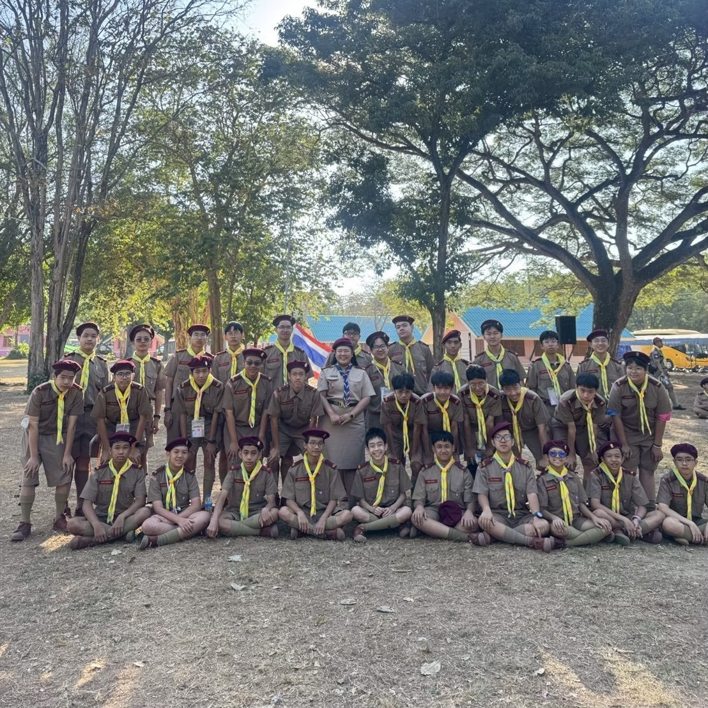
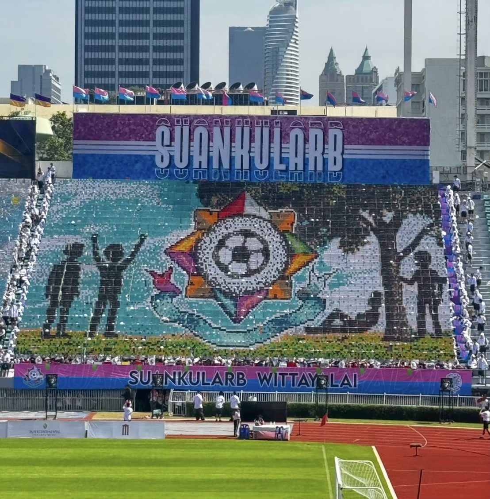
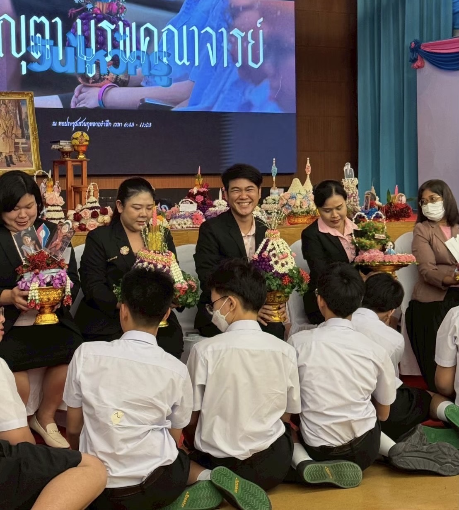

ประวัติส่วนตัว
ชื่อ : เด็กชายคณินท์ ยังให้ผล ห้องเกท ม.203 เลขที่ 4
ปัจจุบันเรียนอยู่ที่ : โรงเรียนสวนกุหลาบวิทยาลัย
เกิดวันที่ 10 มิถุนายน ค.ศ.2011 อายุ 14 ปี
ผลไม้ที่ชอบ : ไม่มีครับ🤢
เครื่องดื่มที่ชอบ : นํ้าเปล่า💧
ข้อมูลติดต่อ : IG : kaninyounghaipol
กิจกรรมระดับ ม.2 ของผม


